A successful attempt at minmaxing fun.
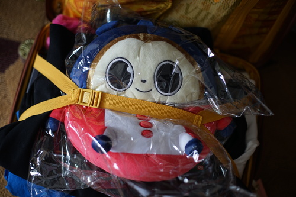Ryan, Slippils, and I traveled together to the con. I packed a little lighter than I did last year and luckily none of our luggage lost wheels on the way to the con. I still couldn't drag my own luggage up the hill to the hotel so Slippils had to help me again like last year. We checked in to our hotel at the Sheraton while I complained a little about not being at the Grand Hyatt. We moved our stuff around for a bit and then headed out to check out badge pickup.
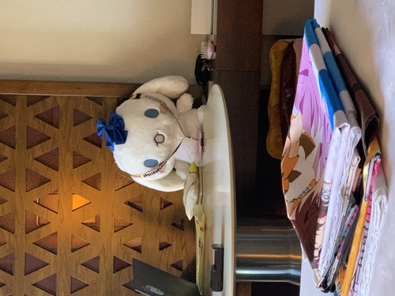Badge lines are usually not that bad at Sakuracon, especially on early Thursday. We arrived at badge pickup at 2:30 PM. There was a decent number of registration lines open, but it wasn't fully staffed. The overflow line was the line to get into the registration line. Ryan, Slippils, and I got in line and discussed leaving to coming back later. We would all surely stand in it twice with our friends who hadn't arrived yet. Ryan did my registration and it wasn't a given that I would be able to pick up my badge without him, so we stayed in line. We waited 1 hour 22 minutes for our badges. 3 people cut in front of us from other lines. There was some talk that the badge printers were failing, but I couldn't verify the info.
We heard a college guy in line talk about how he was weird for liking anime and having an anime tattoo. He had a logo on his arm that I believe is from Berserk? I didn't read or watch it.
Two people were at each registration booth. The second woman started putting my VERIFIED ADULT wrist band on me without checking my ID or seeing my badge didn't have a giant M on it. I ended up putting Ryan's on too tight and had to play with his wrist for a half hour later to get it off. This wrist band is the exact same design as last year with the year changed. The badges were super flimsy. I was a little afraid mine would rip off the lanyard. There were no printed lanyards this year, only plain black ones.
I went back later with Linus and Tae after they arrived. The overflow line was now over three times as large as it was before and a man was saying the overflow line was 3 hours long and the registration line is an hour long. We ended up cutting straight to the registration line, so the wait was only around an hour. Someone in our group had a printer error with his badge and we had to wait a few minutes for them to get the printer back up.
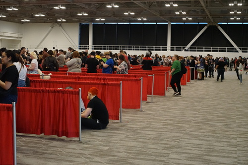 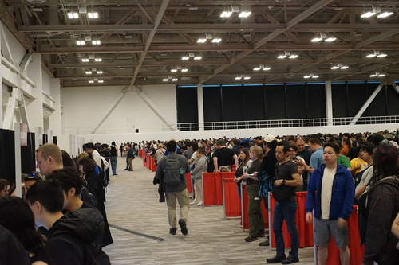Badge pick up closes at 10 PM generally, so I was very surprised when we walked past after dinner at 10:40 to see the line extending out the door of the convention center on to the sidewalk. I don't know if they processed all people in line or sent them home, but the staff definitely stayed late.
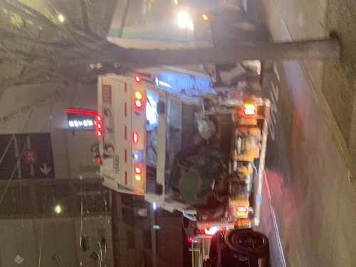Linus and I went to the Sheraton lobby where I found my friends Frisk and Alex! I brought a big Cinnamoroll plushie for Linus, so we got him out and drew him together. I even got Alex and Frisk to draw too. Frisk showed me Horse Race, which I thought would be Umamusame cr*p, but it was great!
By some miracle, the petticoats Linus ordered for Tae and I arrived Thursday morning before he left, so I was able to wear my h.naoto birdcage JSK this day.
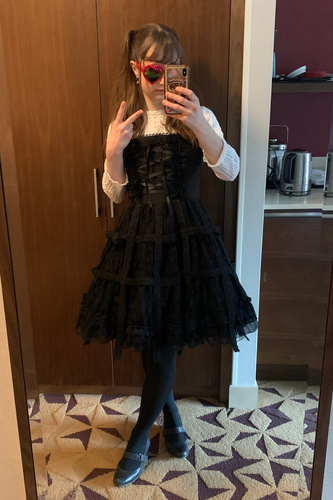Here's one of very few photos of my very professional and awesome coord that h.naoto refused to comment on.
Linus was taking too long to get ready so at about 11 AM, I headed out on my own to the dealer's hall to check out The Goods. The registration line was now wrapped around the outside of the building. Someone said it was wrapped twice, but I didn't see that myself. I have a report that the line was bad at 6 AM.
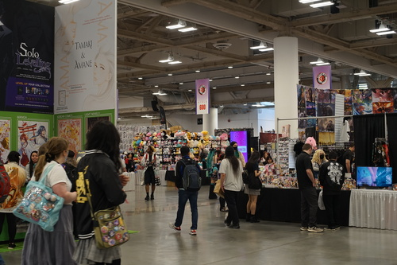 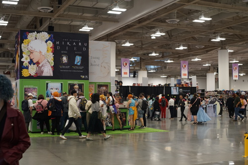 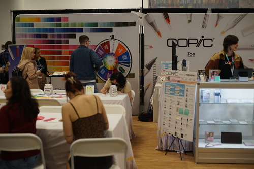I was very pleased to see Copic was attending this year! They had a coloring station and spin the wheel after signing up for their email newsletter. I signed up with one of my real emails, but there was no email verification, so I told all my friends to go and enter fake emails. I won a Multiliner Brown 0.1 for my first spin. After Linus arrived, we went back so he could spin but the girl recognized me, so I waited for the next day to spin again. I asked if they were selling super brush nibs, and of course, they weren't. I also asked about the Multiliner SP line, which seems to be discontinued. One of the staff said it was getting a rehaul and would be back later this year.
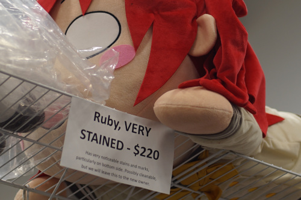Tae's crew spotted a pair of Smartdolls were owned by a man and a woman we found near the Copic booth.
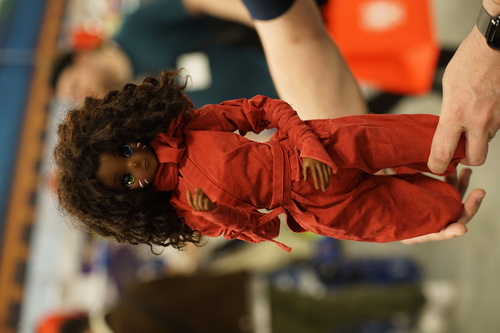 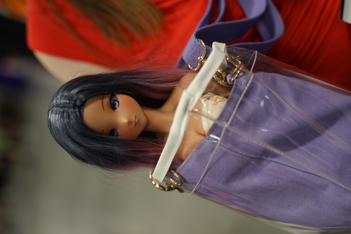This Lysander in a cat carrier was on the skybridge. He is owned by Niko who was nice enough to let me take a photo. Poor guy seems a little cramped in there but at least he's safe!
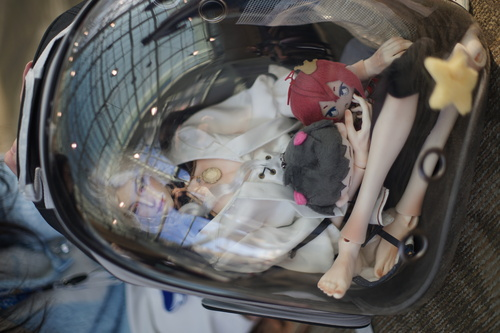Linus and I began our yearly search for Yuki Nagato. We found a few Haruhi Suzumiya books at Retro Saikou. Linus decided to get the pack of two line art books, but the line was really long, so we put them back to come get them later. An artist in the dealer's hall, who I believe is Centi, had a Yuki Nagato print! Linus bought 3 of them.
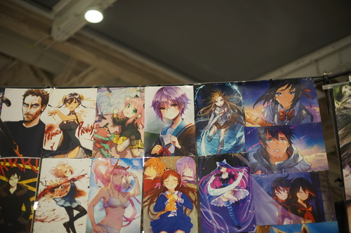My buddy Frisk works for Office Expo, so I went to their booth to see if he was there. The vtubers here were upgraded from the vtuber I saw last year. They had 3 large vertical TV screens where you could chat with your choice of vtuber. I dislike streamers of all forms (except Lange) so I avoided looking at the screens as the vtubers called out when passing by. Maybe the third time we walked by, we found Frisk at the booth! He was standing in front of one of the screens so when I ran up and hugged him I was dragged away from the camera nyoron~
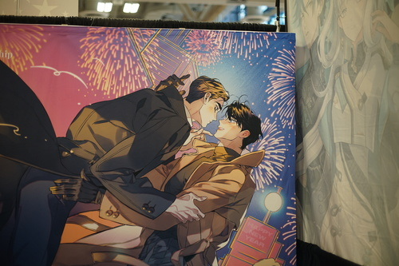I found some sort of a "boys kissing" booth and there was a man there chatting about their Great Boys Kissing Products. I picked up a bookmark on the table and asked if it was free and he said no and snatched it out of my hands! No boys kissing for me!!
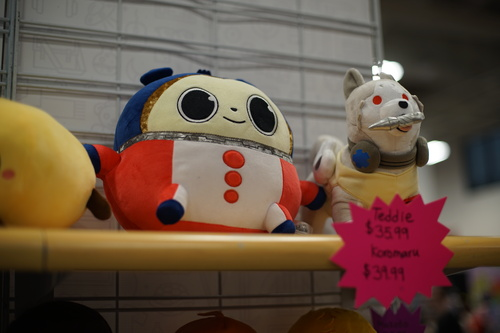I was doing very well not buying this beautiful plushie of my boyfriend! Linus bought him for me later ;u;
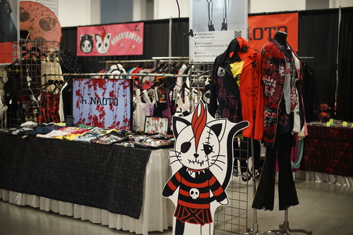Linus and I stopped by our good friend h.naoto's booth. We checked out all his wares but I wasn't head over heels for much because his fabric choices on most items were low quality and he uses prints with text often. I did find a hoodie I liked and there was a short lace kimono top that I liked as well.
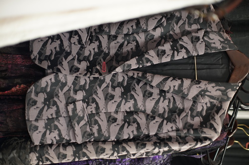Naoto-san was very excited to tell us about his jacket made of a woven corpse print. I believe he said it represented the atrocities of war. The pink buttonhole thread represented the mix of the blood of death and milk of birth.
I didn't look super closely at the prices because I was interested in so few items, but they seemed to be $1 USD = 100 yen. Last year, they were adjusted to the exchange rate.
Linus bought some Royce choco and shared with me. The rum flavor one was so delicious!!! I want this stuff in my fridge all the time. Big money when???
We finished our dealer's hall run and headed over the the AA for about 20 minutes before it closed. We didn't find anything.
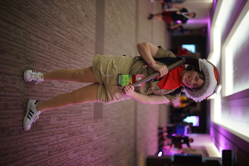A friend who goes by topazrain online, who we met at my "doll panel" last year met with me again this year. We sat on a bench on the 6th floor and chatted together. I would have had another doll panel if they didn't lock all the doors to the empty rooms.
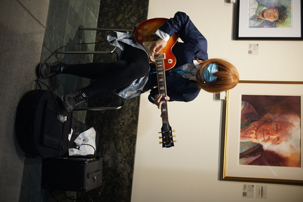We met up with tae's crew outside of the rave exit and drew together. Tae drew a Battler for Stan and I kinda screwed around chatting. Oops!
Saturday morning, we were awoken by sirens. This isn't particularly unusual for Seattle, but we got a message in the group chat from Kohi that The Cheesecake Factory was on fire. Sure enough, we opened the blinds and could see quite a bit of smoke from our window! For those who have never been in the area or attended Sakuracon recently, The Cheesecake Factory is right below the location of the artist's alley at Sakuracon. It's adjacent and connected to the Grand Hyatt hotel as well.
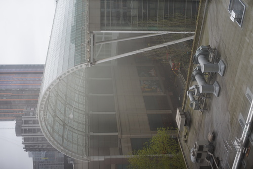 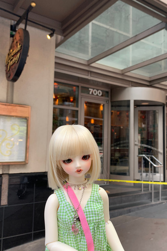The dining area of the Cheesecake Factory was completely unzorched. It was strange to see it empty at that hour.
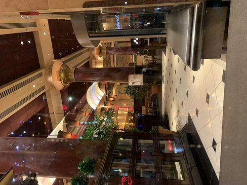The AA had a delayed opening and the 6th floor was evacuated. The 6th floor was reopened at 11 AM and the Artist Alley opened at 3 PM. The AA was open until 9PM to make up for lost time. The Grand Hyatt did not evacuate, but did not allow anyone to re-enter the building until around 2:15 PM. After it opened, they had really loud fans running in the elevator shafts. They were loudest around floor 8 and I never want to get in an elevator again.
Rumor had it that the fire was started by an electric vehicle charger, but the Seattle Fire Department has announced the source was a kitchen fryer. It's interesting to note that this location was set to close on May 5th.
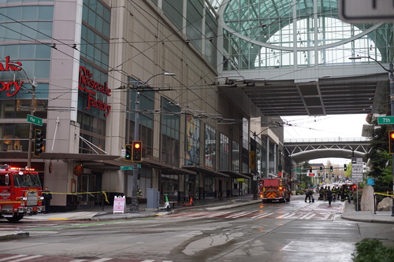 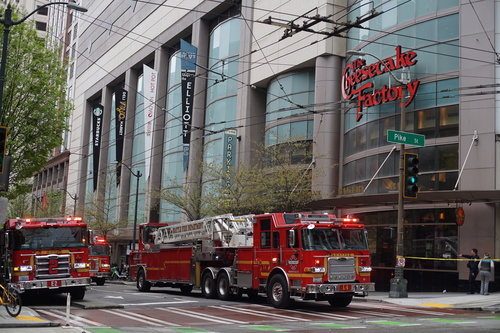 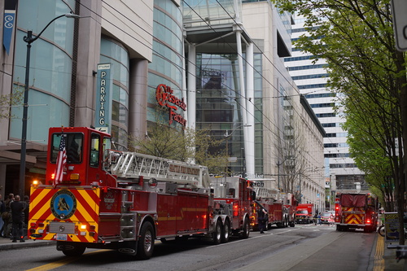I wore PC98 Alice this day and carried around Hina with me quite a lot. She is much lighter than Cheby! But her wig fell off her head at least 5 times. I used ribbons to tie her shoes to her feet so there were no issues there.
I finished PC98 Alice in 2014, but last year realized how many shortcuts I took. The cosplay was being held together by safety pins. I remembered a few days before the con and decided to fix that, but ended up spending more than a few hours working on it. I con crunched an 11 year old cosplay! I removed the elastic from the under skirt and made a tied waistband because I have come to hate elastic a lot in my old age (17). This is my favorite cosplay to wear, so I'm considering redoing the blue skirt for next year.
PC98 Alice is a bit of an obscure one. All of the PC98 characters are not recognized often unless it's Reimu or Marisa. Even then the color swap may be too much. Yuuka and Alice were also both brought back for the Windows games, so there's a chance of someone recognizing them. A man complimented me on my PC95 Alice cosplay. I told him I was PC98 Alice but he was very confident it was PC95. I found a Nazrin and Suika pair later who had Touhou ribbons on their badges. I asked where they got them and someone had approached them just because they were wearing Touhou cosplay. Nazrin was confused why I was sad but soon realized what I was wearing. Such is the life of a forgotten doll loving Touhou!
Saturday was our big day for activities. We were attending the doll meetup at 1, the h.naoto fashion show at 2:30, then running the fountain pen meetup whenever that ended. It was nonstop action!
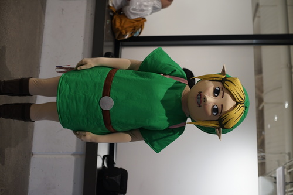Before the doll meet, Linus and I scouted the Summit building for a place to hold our meetup. We found a back room designated as the arts and crafts room. We had no idea Sakuracon had such a thing. We asked the staff if we could hold a meetup there and they agreed. We ran into our friend maullar in the building and ending up chatting so hard that we were a few minutes late to the doll meetup.
Raedesu is generally the organizer of these meetups from what I can tell. I have the worst trouble getting the time and location of these meets! They're only posted on Discord, so I have to beg people for information on DoA. I asked if she could post them on DoA next time, but she said she is banned from DoA. I was literally inviting people I saw on the street! Maybe 8 people attended and 5 were invited by me or me.
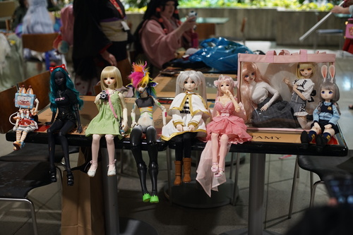 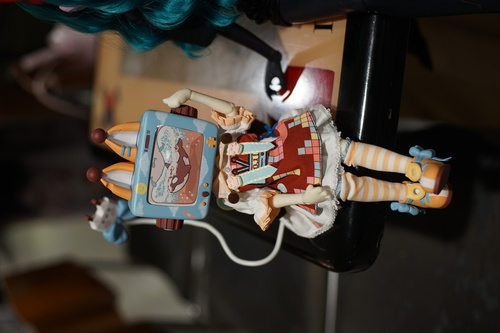A blindbox TV head
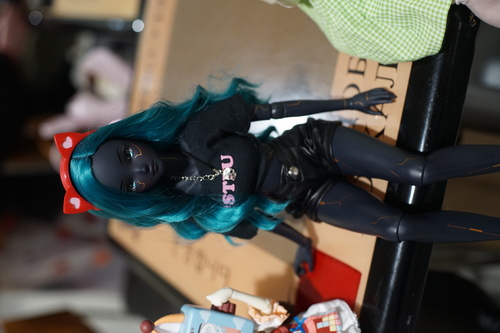Raedesu's Smartdoll
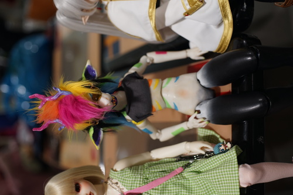A custom 3D printed doll
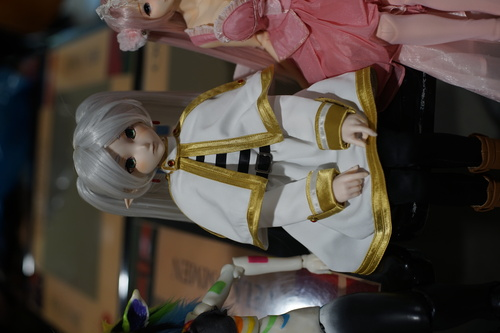DD Frieren
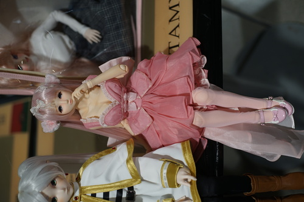An AP girl. I think she's the same doll I took a photo of trapped in a backpack last year.
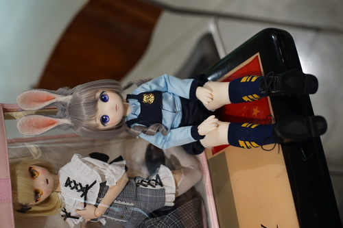I had a really good time chatting with Kohi's friend Elise! She had the custom DD, custom MDD, and Puyoo Judy.
 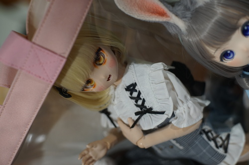
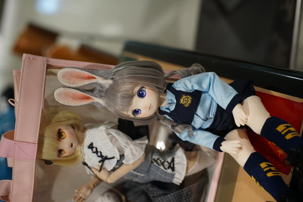
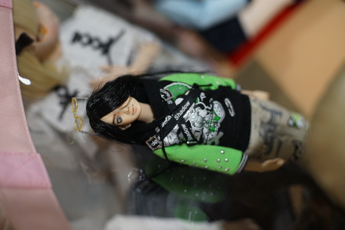
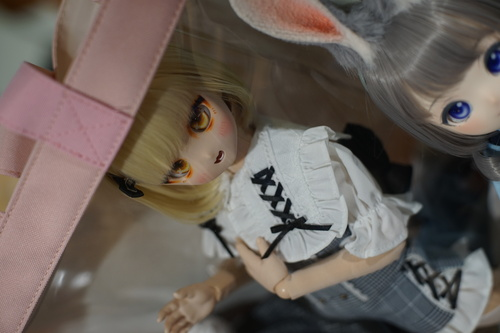
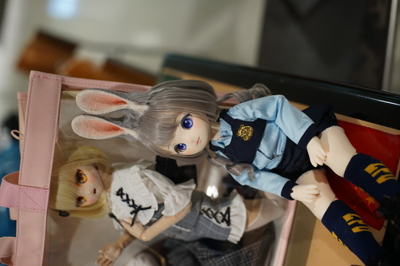
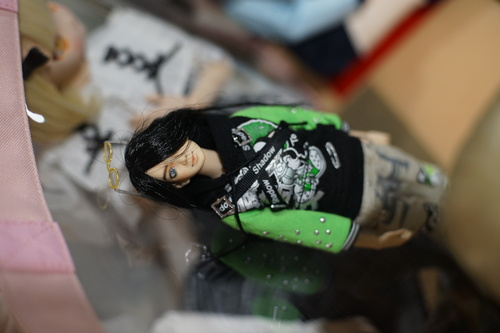
A meetup attendee arrived at the last second after everyone but Elise, Linus, and I had left, but I got a photo!
The meet up felt particularly small this year and had 6 dolls (half being owned by Elise) that are DoA on topic. Hopefully we can get some more attendees next year.
After the doll meetup, we headed towards the summit building for the fashion show, stopping by to see if we could pick up Linus's ink collection at his hotel. It was STILL closed, but opened after a couple minutes of waiting. We grabbed the inks quickly, but tae returned and we waited for her to get ready so we could go to the fashion show together.
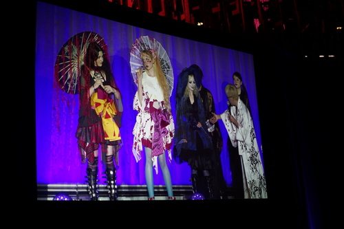We were late to the fashion show, but still caught the entire runway. The theme was D-PON (Deep Japan). It was heavily Japanese inspired with a kimono made out of tshirts and gauze weight junihitoe. I liked 9/10 of the designs this year. The one bad design made a girl look fat and I didn't think that was very polite of him.
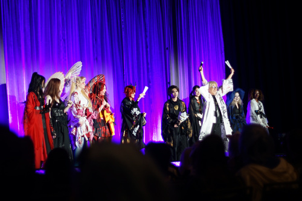Our funnyguy h.naoto-san either real tripped or fake tripped on stage. It's hard to tell with him! He said he needed help with the kanji he made up that was printed on a lot of his clothes. With the help of audience members, he decided it should be read "Jackson".
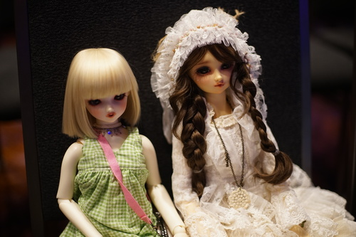Topazrain met us at the fashion show. We didn't get to chat long there, but I did snap a photo of Hina and Midori (F-01) together. Her head looks really large even next to Hina. Midori is very pretty! Her morigirl dress is super detailed and beautiful. She was my favorite doll that wasn't Hina at the con.
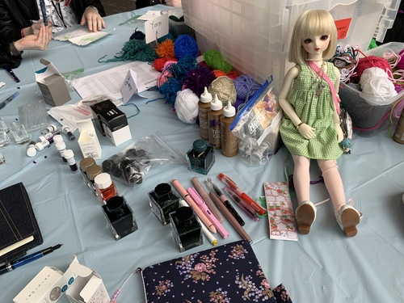We ran off to our First Annual Sakuracon Fountain Pen Meet Up 2025 located in the Arts and Crafts room 329 in the summit building. We had a headcount of 6 and Hina! Eike brought her Chinese pens, which I normally wouldn't consider buying but was very happy to test. Linus brought enough inks for the rest of all our lives and shared them with us in glass containers. A couple attendees brought nothing but we had enough pens and ink for everyone. It was a great time!
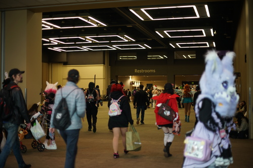Since the AA was open until 9, Linus and I put a serious dent in our walk through with Teezan. One of the first booths we saw had doll clothes for sale with two models. One of the shoppers had access to the discord and said there was another meet up on Sunday in the atrium. Seattle Convention Center is full of atriums, so I got clarification it was Juicy Cafe at 1 PM again. I did not attend due to my analysis that this was unlikely to increase fun.
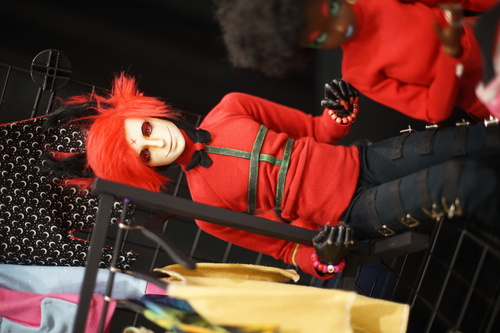 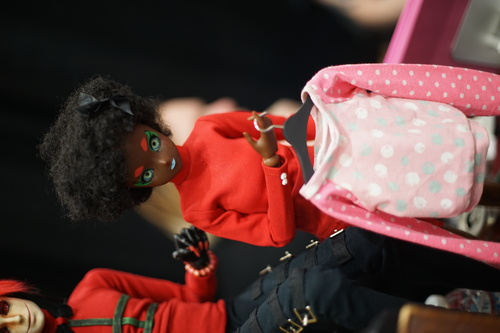 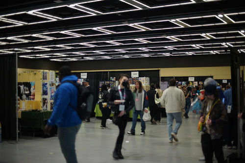 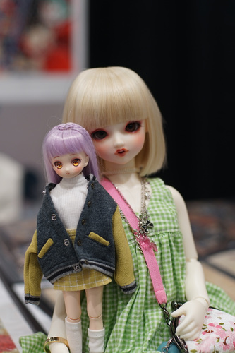I found an artist who had an Azone girl at her booth! She let me take a photo of her with Hina. She showed me photos of her Dreaming Doll, MDD, and SDM. They were all super cute! I forgot to get her artist name because I was so distracted by her dolls, but using I found her website for you all! She paints very lovely portraits of girls. I really should have looked harder but dolls on the brain... y'know... Please give her a look!
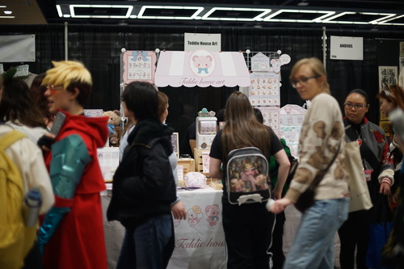One of the last booths we walked by before the AA closed was Teddie House Art. They have the cutest bears! I wanted to buy one of their plushies so bad, but held myself back with all my strength. I keep telling myself I don't need more bears less than $300. Please buy their bears!
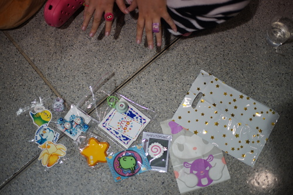Here's Kohi's haul of the day! And her nails too ofc
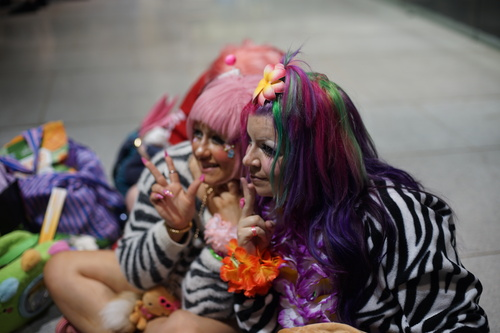 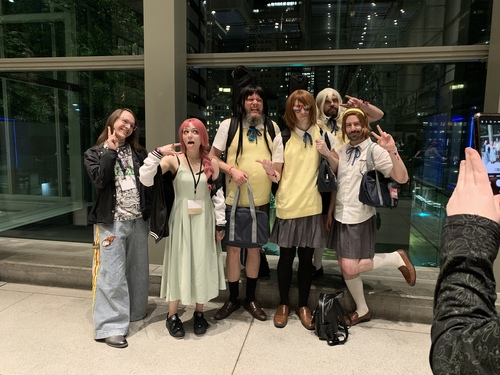Teezy left to unsuccessfully find Frisk, but came back to spend more time with us! We drew together in the Sheraton lobby.
Teezy drew the page on the left and the page on the right is from Frisk and Alex from day 0.
To make staying at the Grand Hyatt even worse, later in the evening, there was a natural gas leak there. At around 3 AM, Linus was able to get back to his hotel room.
It turns out not getting my favorite hotel worked out in my favor somehow.
Linus and I hit the Copic booth for our final spin. I won a sketch and he won a tote bag (which he gave to me). Because I won a sketch, I was able to teach Ryan the shape of the marker to look for reaching into a bag, so he got me one too. Linus remebered the books we left at Retro Saikou day 1, so we ran back over there to find they were already purchased! We will have to go back earlier next time.
h.naoto puts out his fashion show clothes after the show, so we went to check them out. The t-shirt kimono wasn't there! We both really wanted to see it up close. I watched a girl approach him with a custom MSD wearing his clothes. It could have been MSD SWD Yui, but I don't think she was wearing the default outfit. She had a angel wing backpack just like her owner, which was implied to be an official Volks release. I would have stopped to talk to her, but I didn't want to interrupt her fated meeting with h.naoto.
I got a shot of the "Jackson" kanji for everyone curious.
Our next goal was to finish the AA. We found a booth we both loved! eecks has lovely ink and watercolor art with many originals. Linus and I acquired some prints and a sketchbook.
Our search was shorter than expected because they did not utilize the floor under the main AA room. We didn't really know what to do after this so we started wandering the old covention center.
We started taking photos of flowers, as cool people do. Ryan found us and we walked back to the AA so I could show him the booths I liked! Our small group was at a loss for what to do until 4 PM, so we decided to head back to the dealer's hall for the last 30 minutes or so.
Ryan's really popular! He gets stopped by more people than I ever have! A few people told him there were a Shinobu and Nadeko in the AA. We found them after a search but they didn't notice Ryan was right behind them! We found them later when they saw Ryan on the street and they all had a good laugh about it.
I found a dealer with a lot of cheap keychains and I dug through the bucket with Linus looking for Ishigami from Kaguya-sama (I love incels) but he was nowhere to be found! I did find a 9S for me and a bunch of other keychains as gifts though.
4 PM came and the dude told me to hurry up and check out! I had spent every dollar I had on me. Sakuracon banzai!!
In the last year, SakuraCon has deleted their Twitter account and moved to BlueSky due to unnamed Current Events. This has made it a pain to get updates because who tf uses BlueSky.
The badge line was unacceptable this year. We are blessed that Seattle in April is not LA in July because this was an excessively long wait for many people.
All of the monitors outside each room had a picture of the mascot and the room number. None of them listed upcoming events in the room as they have in previous years.
The guest list this year was questionable. 16 American voice actors, 1 drag queen (????), 3 Japanese voice actors (one of which is American), an author who writes in English, h.naoto, and 2 musical guests. Anime conventions are filled with normies who watch dubs on Netflix now, so perhaps this is an acceptable move in 2025? Listening to English VAs makes me sick.
In the AA, there was less Genshin Impact this year. Lots of LADS because girls cannot get enough of predatory Chinese porn these days. Many people were selling mechanical keyboard switch clickers. Some of the keycaps looked well made and others were obviously decorated with nail stickers. I use a Model M so I was not lucky enough to find a cute keycap for my board. I've been studying drawing a bit over the last year and it's becoming more and more obvious who skipped sudying fundamentals. Quite a few AA artists are getting by this way.
You may notice the mascot this year is a cute boy. From what I read from Redditors of low trustworthiness, he is the permanent mascot now and was not created through the mascot contest competition. Allegedly he was commissioned from an artist in the AA, though I didn't find his designer's name. It's verifiable that the contests are no longer running.
Last year he was revealed on screens all around the convention center with his name. I wasn't able to remember his name, so Linus and I went to many info booths and asked many staffers "What is the name of the mascot?" We went on a hunt for the man who knew everything about the mascots. No one knew his name. Many believed he never had a name. One member of the staff revealed that his debut at Sakuracon 2024 was accidental.
I knew I took a photo of the screen at Sakuracon 2024, but didn't have my photos from last year available to me. Here it is! The big reveal.
I only acquired 3 verified adult wristbands. They were harder to come by this year! I got a Copic tote bag, pencil pouch, lanyard, color pin, 1 multiliner, and 3 sketches. All of these were from free spins at the booth. Yen press was kind of boring but I grabbed some bookmarks and can badges. Tae gave me some stickers of her art and then gave me extras because I'd never be able to use precious stickers if I only have one.
I couldn't find any official photos of the h.naoto hoodie in his webshop, so I took a few.
I really like his angel wing print and the little feather on the hood is a nice touch. It's also pink! I had to fight tae over this one. It was the best item in his shop!
And the haul from the fountain pen meetup and gifts from a friend in Japan that were delivered during this con.
My friend in Japan sent me panda notes, Kuretake Ebicha ink, and a new pink Kakuno! It was so sweet of her! I love them all so much.
Linus bought me Sailor Haha, Diamine Celadon Cat, and a Lamy Studio Rose EF a few weeks ago. He went on an ink binge and bought a ton of inks, so I took samples of many of them. He bought a pack of samples as well and picked the ones he liked and gave the rest to me. I'm excited to draw with them all!
It was a very good con! Linus and I can now legally add "fun engineer" to our resumes.